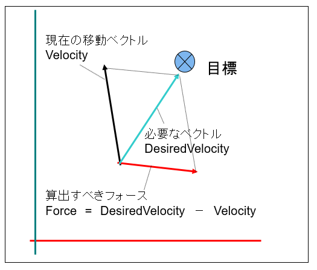

３０３．Rigidbodyコンポーネント
Rigidbodyコンポーネントは
速度を管理するコンポーネントです。
速度が
Velocityと呼ばれ、
向きベクトルを持ったスピードです。
単位は
秒速です。
Rigidbodyコンポーネントを実装するには、ゲームオブジェクトの
OnCreate()関数などで
//Rigidbodyをつける
auto PtrRedid = AddComponent<Rigidbody>();
PtrRedid->SetVelocity(Vector3(0, 0, 1.0f));
のように記述します。これでオブジェクトは
秒速1.0fでZの方向に移動するようになります。
動的に変化させる場合は、ゲームオブジェクトの
OnUpdate()関数などで
//Rigidbodyを呼び出す
auto PtrRedid = GetComponent<Rigidbody>();
PtrRedid->SetVelocity(Vector3(0, 0, 1.0f));
のように設定します。
SetVelocity()関数に渡す値を動的に変更すれば、違う動きを演出できます。
ステアリング（操舵）
さて、主に
AIで操作するオブジェクトに関しては、前項のように
Action系で動かす方法もありますが、
ステアリング（操舵）と呼ばれる方法があります。
ステアリングは
ニュートンの第2法則に基づき
フォースを利用したAI動作です。
まず、
ニュートンの第2法則とはどんなものかを考えましょう。公式は以下です。
というのが
ニュートンの第2法則です。これは
とも書けます。これはどういうことかというと、
加速（A）は、フォース（F）をM（質量）で割った値であるということです。
フォースとは力のことです。
静止している物体が動くことや
動いている物体が止まるというのは必ず
加速が発生します。
動いている物体がそのまま同じ速度で動くのは
慣性が働いているので、
加速は加わりません。つまり、
速度を変化させるのには
加速が必要なのです。
ステアリングというのは
F（フォース）を発生させ、その力の向きに加速をつける方法です。
では、具体的にはどのように計算するかですが、
目標地点に向かうステアリングを考えてみましょう。
以下の図は
チュートリアル003でも紹介した図ですが

図0303a
今、移動している物体がある目標に向かうために方向転換をするとします。
すると、必要なベクトルは
青い線で表されたベクトルです。物体が静止しているのであれば、単純に
F（力）は目標の方向にかければいいのですが、現在も移動中で、
速度を持ってます。そのため、現在の速度を考慮した方向に力をかけなければいけません。
図を見ればわかるように、
現在のベクトル + 赤い線のベクトル = 青い線のベクトル
という関係があります。ですので
赤い線のベクトルを導くには
赤い線のベクトル = 青い線のベクトル - 現在のベクトル
と引き算をしてあげればいいのです。ですので、以下は概念ですが
//準備
//目標地点までのベクトルを得る（正規化されていてよい）
Vector3 Target = GetTarget();
//最高秒速をかける
Target *= GetMaxSpeed();
//前回のターンからの時間（秒）
float ElapsedTime = App::GetApp()->GetElapsedTime();
//Rigidbodyを取り出す
auto PtrRedit = GetComponent<Rigidbody>();
//現在の速度を取り出す
auto Velo = PtrRedit->GetVelocity();
//目的地に向かうために力のかける方向を計算する
//Forceはフォース（力）である
auto Force = Target - Velo;
//加速度を求める
//GetMass()は質量を得る関数
auto Accel = Force / GetMass();
//ターン時間を掛けたものを速度に加算する
Velo += (Accel * ElapsedTime);
//速度を設定する
PtrRedit->SetVelocity(Velo);
上記の例で赤くなっている
GetTarget()は目標までの正規化されたベクトルを得る関数で
GetMaxSpeed()は最高秒速を得る関数です。また
GetMass()は物体の質量を得る関数です。こららはどこかに用意しておきます。
このようなコードを
OnUpdate()関数など、毎ターン実行されるように記述しておきます。
そうすると
目標地点が移動しても、常に目標を追いかけるAI動作を実装できます。また、このAI動作は目まぐるしく
加速が変わるために、生きてるような動作を実装できます。追いかける速度を調整した場合は、GetMaxSpeed()が返す値を変えればいいのです。
ちなみに
BaseCrossサンプルの多くは
プレイヤーの動きに上記のアルゴリズムを使用していますので、確認しましょう。
ステアリング（操舵）行動
ステアリングを実装するには、
Rigidbodyコンポーネントを追加して、
OnUpdate()関数などで上記のようなコードを記述すればいいのですが、いくつかのパターン化された
ステアリングが
行動クラスとして用意されているので、それを使う方法もあります。
チュートリアル006サンプルには、
SeekObjectという
プレイヤーを追いかけるオブジェクトがあり、これに
SeekSteeringコンポーネントと
ArriveSteering行動、そして
SeparationSteering行動という３つの行動でＡＩ動作を実装しています。
SeekObjectにおける実装はまず
SeekObject::OnCreate()関数において
//初期化
void SeekObject::OnCreate() {
//中略
//操舵系のコンポーネントをつける場合はRigidbodyをつける
auto PtrRegid = AddComponent<Rigidbody>();
//Seek操舵
auto PtrSeek = AddComponent<SeekSteering>();
//Arrive操舵
auto PtrArrive = AddComponent<ArriveSteering>();
//Arriveは無効にしておく
PtrArrive->SetUpdateActive(false);
//オブジェクトのグループを得る
auto Group = GetStage()->GetSharedObjectGroup(L"ObjectGroup");
//グループに自分自身を追加
Group->IntoGroup(GetThis<SeekObject>());
//分離行動をつける
AddComponent<SeparationSteering>(Group);
//中略
}
このように、３つの
ステアリングコンポーネントを実装しています。
SeekSteeringは
目標を追いかける操舵を発生させるコンポーネントで、
ArriveSteeringは
目標に到着する操舵です。この2つの違いは
目標に近づいたときにブレーキをかけるかどうかです。発生する速度は
SeekSteeringのほうが速いです。
SeekSteeringは目標に到達しても、そのまま行き過ぎてしまいます。ですから、追いかける対象に近づいたら、
ArriveSteeringに操舵を切り替える処理をしています。
このオブジェクトはインスタンスは４つ作成されます。それらはすべて初期値は
プレイヤーから離れている位置にいるので、最初は
SeekSteeringのみ有効にしているのです。
オブジェクトとプレイヤーの位置が近くなったときに
SeekSteeringは無効になりArriveSteeringが有効になります。
また
SeparationSteeringは
分離行動と呼ばれるステアリングで、このステアリングは
お互いが離れる操舵を発生させます。SeekObjectは、4つにインスタンスが作成されますが、これらがすべてプレイヤーを追いかけると、次第に同じ軌道をとるようになります。なるべくお互いがぶつからないようにするためにこの操舵を加えています。
ここで
なるべくというのは
ステアリングを考えるのにヒントとなる表現です。
ステアリングは
フォースを発生させ、現在の速度を変化させる（加速をかける）アルゴリズムです。ですから、
現在の速度によっては
ステアリングがあまり効かない場合もあります。まあ、現実の
自動車と同じですね。
車は急に止まれないのは
出ている速度が速い場合、ブレーキをかけても思うように止まれません。
ステアリングはそうした現実の現象をアルゴリズム化したものです。
ステアリングコンポーネントはすべて
同じフォース変数を使います。つまり
フォースは合成することが可能ということです。
追いかけるというフォースと
お互いが離れるというフォースを合成するには、単純にフォース同士を足し算します。
このように、
複数のステアリングコンポーネントを同居させて、最終的には
RigidbodyのVelocityを変更します。
Basecrossにあらかじめ実装されている
ステアリング系コンポーネントは以下のものがあります。
| コンポーネント名 |
用途 |
備考 |
| SeekSteering |
探索する（追いかける） |
|
| ArriveSteering |
到着する |
|
| PursuitSteering |
追跡 |
精度の高いSEEK |
| WanderSteering |
徘徊 |
|
| WallAvoidanceSteering |
壁回避 |
|
| ObstacleAvoidanceSteering |
障害物回避 |
|
| FollowPathSteering |
経路追従 |
|
| AlignmentSteering |
整列 |
グループ操舵 |
| CohesionSteering |
結合 |
グループ操舵 |
| SeparationSteering |
分離 |
グループ操舵 |
| SeparationSteering |
分離 |
グループ操舵 |
グループ操舵となっているのは
分離行動のように、
グループを指定する操舵です。また、操舵によってはパラメータを複数設定するものもあります。ソースコードのコメントも参照ください。
また
ステアリングのアルゴリズムは
実例で学ぶゲームAIプログラミング（オライリージャパン）を参考に、コンポーネント化しています。
ステアリング（操舵）コンポーネントを自作する
さて、上記のようにいくつかの
ステアリングコンポーネントが用意されていますが、本当にゲームにぴったりくるステアリングを実現するには、
コンポーネントを自作するのが良いでしょう。
ステアリングの自作方法として、
FullSample303を参考にしてください。
Character.h/cppにある
MySeekSteeringコンポーネントは、
Seekステアリングを自作する方法が記述されています。アルゴリズムは
SeekSteeringと同じですが、計算方法を変えるといろんな表現ができると思います。